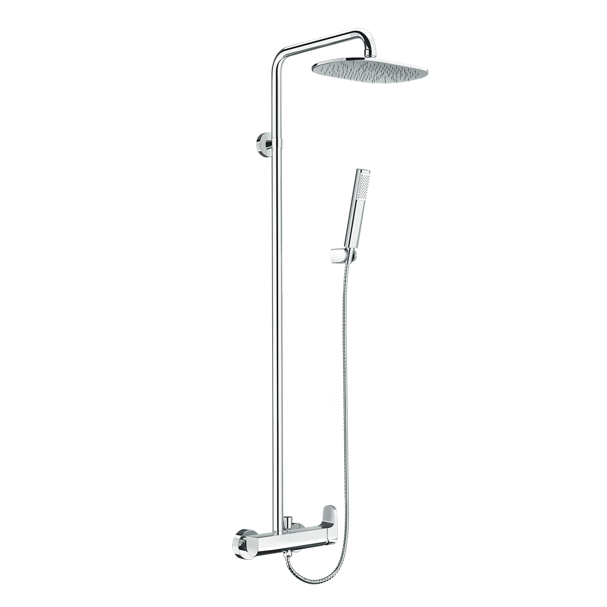
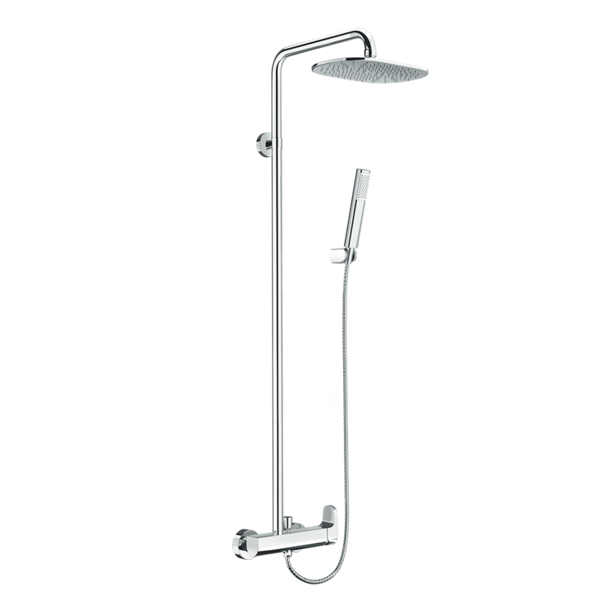
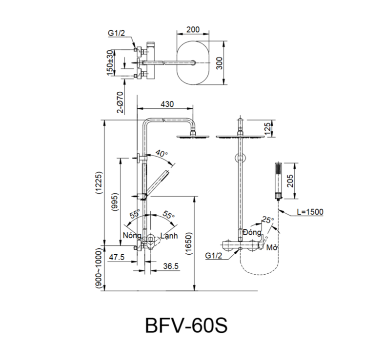

Với sự kết hợp giữa phong cách thiết kế tối giản và công nghệ hiện đại, sen tắm cây BFV-60S không chỉ nâng tầm thẩm mỹ mà còn mang đến trải nghiệm thư giãn hoàn hảo cho gia đình bạn.Thiết kế sen tắm cây BFV-60SSen tắm cây BFV-60S sở hữu thiết kế đơn giản nhưng vô cùng trang nhã, dễ dàng hòa hợp với nhiều không gian nội thất khác nhau.Tay sen được thiết kế theo phong cách tối giản, cho phép người dùng linh hoạt chuyển đổi giữa các đầu phun nước tùy theo nhu cầu.Sản phẩm được trang bị thanh trượt thông minh giúp dễ dàng điều chỉnh vị trí và độ cao của tay sen, phù hợp với vóc dáng của từng thành viên.Bộ phận củ trộn có thiết kế tối ưu hóa công năng, giúp người dùng thao tác điều khiển lượng nước và nhiệt độ một cách dễ dàng, tiện lợi.Công nghệ trộn bọt khí, trải nghiệm tắm sảng khoáiBát sen được thiết kế đặc biệt với chế độ nước trộn bọt khí, không chỉ giúp tiết kiệm nước mà còn tăng cảm giác thoải mái khi tắm.Công nghệ phun nước đặc biệt giúp làn nước bao phủ đều lên da, đồng thời kiểm soát tia nước để không bị bắn quá nhiều ra bên ngoài.Sen cây BFV-60S hoạt động hiệu quả trong dải áp lực nước tiêu chuẩn từ 0.05 MPa đến 0.75 MPa, đảm bảo dòng chảy luôn mạnh mẽ.Chất liệu bền bỉ và an toàn cho sức khỏeVòi nước được sản xuất với hàm lượng chì thấp, đảm bảo an toàn tuyệt đối cho sức khỏe người sử dụng.Bề mặt được bao phủ bởi lớp mạ Crom/Niken bền vững, giúp chống oxy hóa, chống ăn mòn và giữ vẻ đẹp sáng bóng lâu dài theo thời gian.Thiết kế với đĩa Cartridge cao cấp giúp vận hành êm ái, ngăn chặn rò rỉ và hỗ trợ tiết kiệm nước hiệu quả.Video giới thiệu sen tắm INAXBản vẽ sen tắm cây BFV-60SThông số kỹ thuậtChất liệuĐồng mạ Crom/NikenLoạiSen cây tắm nóng lạnhKích thước430mm x 1125mmThiết kế-Thương hiệuINAXTính năng- Chế độ trộn bọt khí giúp dòng nước êm ái và tiết kiệm nước - Thanh trượt tiện lợi dễ dàng điều chỉnh vị trí và độ cao tay sen - Thiết kế vòi ít chì, đảm bảo an toàn tuyệt đối cho sức khỏeÁp lực nước0.05 MPa - 0.75 MPaKhác- Hotline tư vấn và bảo hành: 18006633
Sen tắm cây BFV-60S
Vòi chậu thương hiệu INAX.
Đã cập nhật danh sách yêu thích.
DANH MỤC: Vòi chậu
MÃ SẢN PHẨM: BFV-60S
DEPTH: 0mm
HEIGHT: 1125mm
WIDTH: 430mm
Với sự kết hợp giữa phong cách thiết kế tối giản và công nghệ hiện đại, sen tắm cây BFV-60S không chỉ nâng tầm thẩm mỹ mà còn mang đến trải nghiệm thư giãn hoàn hảo cho gia đình bạn.Thiết kế sen tắm cây BFV-60SSen tắm cây BFV-60S sở hữu thiết kế đơn giản nhưng vô cùng trang nhã, dễ dàng hòa hợp với nhiều không gian nội thất khác nhau.Tay sen được thiết kế theo phong cách tối giản, cho phép người dùng linh hoạt chuyển đổi giữa các đầu phun nước tùy theo nhu cầu.Sản phẩm được trang bị thanh trượt thông minh giúp dễ dàng điều chỉnh vị trí và độ cao của tay sen, phù hợp với vóc dáng của từng thành viên.Bộ phận củ trộn có thiết kế tối ưu hóa công năng, giúp người dùng thao tác điều khiển lượng nước và nhiệt độ một cách dễ dàng, tiện lợi.Công nghệ trộn bọt khí, trải nghiệm tắm sảng khoáiBát sen được thiết kế đặc biệt với chế độ nước trộn bọt khí, không chỉ giúp tiết kiệm nước mà còn tăng cảm giác thoải mái khi tắm.Công nghệ phun nước đặc biệt giúp làn nước bao phủ đều lên da, đồng thời kiểm soát tia nước để không bị bắn quá nhiều ra bên ngoài.Sen cây BFV-60S hoạt động hiệu quả trong dải áp lực nước tiêu chuẩn từ 0.05 MPa đến 0.75 MPa, đảm bảo dòng chảy luôn mạnh mẽ.Chất liệu bền bỉ và an toàn cho sức khỏeVòi nước được sản xuất với hàm lượng chì thấp, đảm bảo an toàn tuyệt đối cho sức khỏe người sử dụng.Bề mặt được bao phủ bởi lớp mạ Crom/Niken bền vững, giúp chống oxy hóa, chống ăn mòn và giữ vẻ đẹp sáng bóng lâu dài theo thời gian.Thiết kế với đĩa Cartridge cao cấp giúp vận hành êm ái, ngăn chặn rò rỉ và hỗ trợ tiết kiệm nước hiệu quả.Video giới thiệu sen tắm INAXBản vẽ sen tắm cây BFV-60SThông số kỹ thuậtChất liệuĐồng mạ Crom/NikenLoạiSen cây tắm nóng lạnhKích thước430mm x 1125mmThiết kế-Thương hiệuINAXTính năng- Chế độ trộn bọt khí giúp dòng nước êm ái và tiết kiệm nước - Thanh trượt tiện lợi dễ dàng điều chỉnh vị trí và độ cao tay sen - Thiết kế vòi ít chì, đảm bảo an toàn tuyệt đối cho sức khỏeÁp lực nước0.05 MPa - 0.75 MPaKhác- Hotline tư vấn và bảo hành: 18006633
DANH MỤC: Vòi chậu
MÃ SẢN PHẨM: BFV-60S
DEPTH: 0mm
HEIGHT: 1125mm
WIDTH: 430mm